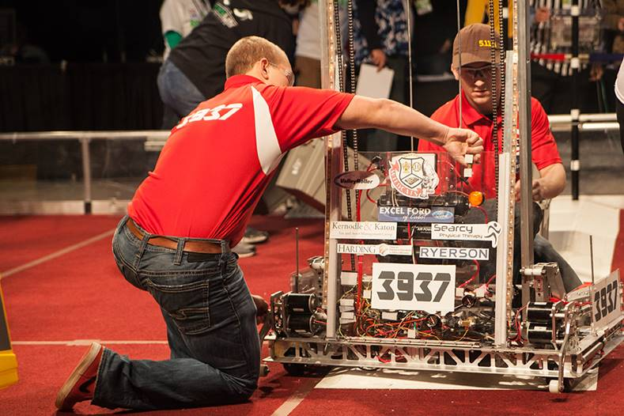

<p class = "clearright">The <i>FIRST</i> Robotics Competition is a high-tech sporting event that pits robots against each other in a fierce competition. In addition to the machines participating in the competition, student drivers, cheering fans, parents and referees give the event the feel of an intense sporting event.</p>

